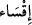

(mühürlediğimiz) kimselere uyma!” (el-Kehf, 18/28) Bâzan da “” kelimesi
kullanılır. Yolunu şaşıranlar hakkında da: “Biz onların kalblerini katılaştırdık.” (el-
Mâide, 5/13) buyurulmuştur. Çünkü mümkünât, bütünüyle Allah’a dayanmakta ve O’nun
kudreti ile meydana gelmesi açısından Allah’a isnâd edilmiştir. Mühürlemenin, O’nun
yaptıklarının bir sonucu olması bakımından da şöyle buyurulmuştur. “İnkârlarına
karşılık Allah onların kalblerini mühürledi.” (en-Nisâ, 4/155). Şu âyet de bunu
te’yîd etmektedir: “Önce inanıp sonra inkâr etmiş olmalarından dolayı kalbleri
mühürlenmiştir.” (el-Münâfikun, 63/3)
Bu âyet-i kerîme, îmândan dönenlerin çirkin özelliklerini ve korkunç âkıbetlerini
gözler önüne sermektedir. Kalb mühürlenmesi, onların inkârlarına bir cezâdır. Allah
onlara yolları kolaylaştırmıştır aslında. Eğer onlar gayret gösterir, nifaklarıyla
boğuşurlarsa, Allah onları başarıya ulaştırır da şöyle bir i’tirâzda bulunma imkânı
kalmaz: Allah’ın kalblerini ve kulaklarını mühürlediğine ve hidâyetten uzak kalmalarını
temîn ettiğine göre, nasıl cezâyı hak etmiş olabilirler?
Şeyh, Tefsîr’inde der ki: Kalblerin mühürlenmesi işinin Allah’a isnâd edilmesi
inanmayanların Hakk’ı kabûlden yüz çevirmeleri ârızî değil, fıtrî (halkî) bir olay
olduğunu tenbîh içindir.
et-Teysîr’de der ki: “Ehl-i Hakk nezdinde “hatm” yâni kalblerin mühürlenmesi Allah
tarafından bir cezâ demektir. Kulu zorla îmândan alıkoymadığı gibi, zorla küfre de
itmez. Belki kulu kötü irâdesiyle küfre dalıp ısrâr etmesinden dolayı ona fazla bir
cezâdır. Kul, bu cezâ sebebiyle îmânın gereklerini yapmayı ve isyân etmemeyi
kolaylaştıran lütf-i ilâhîden mahrûm kalır. Nitekim “Allah’a ve Rasûlü’ne îmân
ediniz.” (en-Nisâ, 4/136) âyeti onların îmânla muhâtab olduklarını göstermektedir.
“Onlara ne oluyor da inanmıyorlar?” (el-İnşikak, 84/20) hitâbıyla durumlarının
kınanması, îmândan men’ edilmediklerinin, küfre de zorlanmadıklarının delîlidir. Şâyed
küfre mecbûr olup îmândan âciz olsalardı o zaman “îmân ediniz” hitâbıyla muhâtab
olmayacaklar, inanmadıklarından dolayı da kınanmayacaklardı. Kıyâmet gününde
ağızlarının mühürlenmesi de böyledir. Onlar orada konuşmaktan âciz oldukları için,
konuşma hitâbına gerek kalmadı. Bu konuda Ehl-i sünnet’in görüşü şudur: Kul kâsib,
Allah hâlıktır.
“Kulûb” kelimesi, “kalb” kelimesinin çoğuludur. Fuâd, yâni gönül anlamınadır. Kalbe
bu ismin verilmesinin sebebi çeşitli durumlarda değişiklik göstermesinden ve diğer
organlardaki etkinliğindendir.
Şeyh Tefsîr’inde şöyle demektedir: “Kalb, çam kozalağı şeklinde bir et parçasıdır.
Vetîn denilen damara bağlıdır. Bu damar kalbin içindedir ve kesildiğinde insan ölür.”
Kevâşî Tefsîri’nde de: Kalb, gönüldeki siyah noktadır. Bâzıları onun çam kozalağı
şeklinde vetîn denilen damara bağlı olduğunu öne sürerler, denilir.
Seyyid Şerîf’in Ta’rîfât’ında da şöyle gelmiştir: “Kalb, göğsün sol tarafında bulunan
çam kozalağını andıran cismânî kalbe bırakılmış rabbânî bir latîfedir. Bu lâtîf varlık